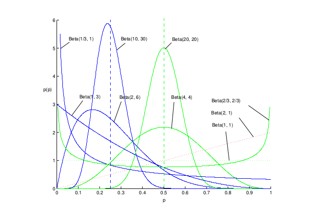

pLSA和LDA主题模型是当前统计自然语言处理领域非常热门的问题,这些主题模型一般都是对文本的生成过程提出自己的概率图模型,然后利用已有的文本数据做参数评估.本文主要介绍其中会用到的三种参数评估方法,包括极大似然估计(MLE),最大后验(MAL)和贝叶斯估计.
我们主要考虑两个推理问题:
(1). 评估参数$\theta$的值以最好的拟合观察到的数据集X. (2). 根据已观测到的数据集X计算新的观察值$\widetilde x$的概率
第一个问题可以看成是估计问题,第二个问题可以看成是预测或是回归问题. 在贝叶斯统计中,参数估计问题可以表述为:
并且我们可以用如下术语定义:
1.极大似然估计(MLE)
极大似然估计主要是求使似然函数值最大的参数值($\theta$),似然函数为:
对似然函数取对数并另偏导数为0,则可求得参数的解:
对上述函数关于参数$\theta_k$求偏导并是的偏导值为0:
根据已观测到的数据集X计算新的观察值$\widetilde x$的概率为:

以抛硬币的贝努利实验为例,每次抛硬币时正面出现的概率为p(未知),假设进行抛硬币N次得到结果集合C.用极大似然估计来求解参数p:
其中$n^{(1)}表示N次实验结果中正面出现的次数,n^{(0)}$表示反面出现的次数.对似然函数求偏导得:
假设抛硬币20次,其中正面出现的次数为12次,则由极大似然估计得出正面出现的概率p=0.6,并且可以预测下一次抛硬币正面向上的概率为0.6．
2.最大后验估计(MAP)
最大后验估计(Maximum a posteriori estimation,MAP)和极大似然估计十分相似,但是最大后验估计中加入了对参数的先验信念(priori belief),它的权重设定为先验分布$p(\theta)$,最大后验估计不是要求似然函数最大化,而是要求由贝叶斯公式算出的整个后验概率最大.

和极大似然估计相比,在最大后验估计中我们需要加入先验分布的对数.先验分布可以理解为我们对事物约定俗成的看法或普遍接受的规律.例如在抛硬币的过程中,如果硬币是一枚正常的硬币,我们认为每次抛硬币正面发生的概率应该服从一个概率分布,这个概率在0.5出取得最大值,这个分布就是先验分布.先验分布的参数我们成为超参数(hyperparameter),即:
通过最大化.当根据已有的数据预测新数据x的概率时:
这里用beta分布来描述硬币的先验分布:
其中beta函数,函数是Gamma函数,可以理解为实数域的阶乘函数:,beta分布的变量取值范围为[0,1].下面为beta函数在不同参数($\alpha,\beta$)下的概率密度函数:

从图中可以看出,当参数取不同值时,beta函数的概率密度函数差异很大,基本上beta函数可以通过调节参数来拟合很多的概率分布.beta算是”万能”的概率分布函数. 在前面的例子中,相信正常硬币正面发生的概率在0.5处取得最大值,所以设定$\alpha=\beta=5(其实,只要\beta=\alpha)$就能保证在0.5处的概率最大,他们的取值只是限定了他们的收敛速度(值越大概率值越密集).

我们可以看出与极大似然估计相比,分子项多了$\alpha-1,分母项多了\alpha+\beta-2$,这就是我们的先验信念(priori belief)在起作用,当我们对先验分布有一个很确信的认知时,如我们假设银币实验中,正面出现的概率在0.5处取最大值,并且左右波动的可能性很小,这样为了表示我们的强先验信念,我们可以将$\alpha=\beta$设定为一个大的值.这表现在公式中就可以表现为,当实验次数不多时,参数估计结果会更多的偏向于先验分布,只有当实验次数足够多时,先验估计的影响才会减弱.
仍采用上面的样例,20次实验中,正面出现的次数为12次,则,这表明”硬币是均匀的”这一先验对参数估计有影响.
上面的实验是$\alpha=\beta=5$的情况,我们假设先验分布在最大值左右波动概率很大,如设定$\alpha=\beta=2$,则,先验对参数估计的影响减弱.
3.贝叶斯估计
贝叶斯估计对MAP做了如下扩展,参数$\theta$由一个具体的值变成参数上个的一个概率分布.这里就不再是单纯的考虑后验概率最大时的参数值,而是将参数的期望和方差信息一同考虑在内.首先通过贝叶斯准则计算后验分布:
由于我们并不是要找后验分布的最大值,所以我们需要计算P(X),由全概率公式展开的:
当观测到新数据时,参数的后验概率会自动调整,并且通过统计分析可以最终得出后验概率分布.但是,P(X)的积分的求解十分复杂.
根据已观察到的数据来预测观测一个新数据的概率为:

对于抛硬币的贝努利实验,假设N次试验得到的试验结果集合C,这里我们加入beta(5,5)的先验信念,在MAP中我们要求后验概率的最大值,在贝叶斯估计中我们要求 满足beta分布的参数的期望.

$Beta(\alpha,\beta)分布的均值,<p｜\alpha,\beta>=\alpha(\alpha+\beta)^{-1},方差V(p｜\alpha,\beta)=\alpha\beta(\alpha+\beta+1)^{-1}(\alpha+\beta)^{-2}$,根据之前的统计,评估结果为:
当20次试验中有12次出现正面时,均值为17/30=0.567,方差为1713/(30$31^2$)=0.0079.
对于上述三种方法的参数估计结果如下图所示:

参考内容:
Gregor Heinrich:Parameter estimation for text analysis 文本语言模型的参数估计 http://blog.csdn.net/yangliuy/article/details/8296481